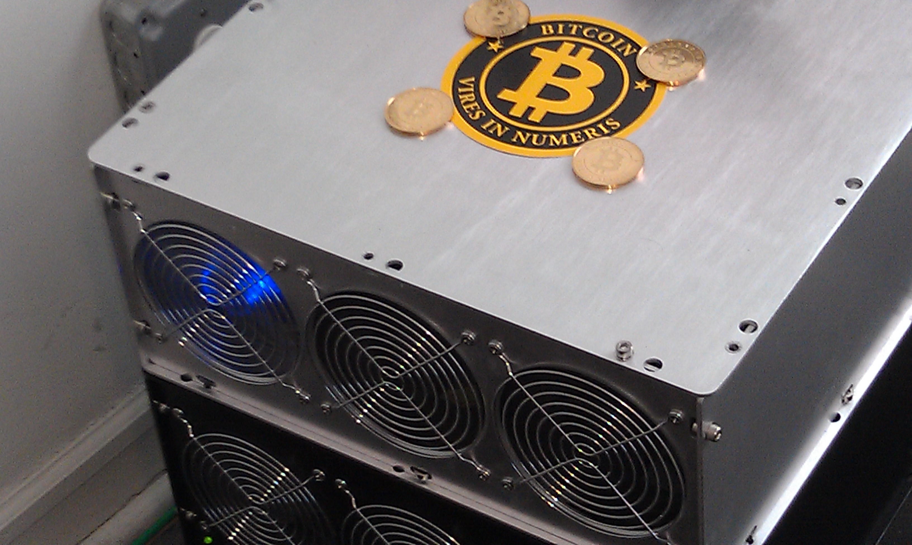

What is Mining?
Lets start with an example of banking system. Suppose a person named Virat has paid some X amount to Sachin through banking channels, what is the proof that the transaction has taken place?
Who confirms that transaction has been made at all? Bank!! Ofcourse, we all know that.
Bank, as a centralized authority confirms the transaction and records it in it's ledger and then these are again shown in bank statements/passbooks ,thus it can be assured that transaction has taken place.
But what in the case of Decenteralized Cryptocurrencies or in case of Bitcoin for say where there is no central authority?
Through cryptocurrency mining, miners confirm all the transaction that has taken place and records it in the public ledger called Blockchain, and passes it to other cryptocurrency miners for validation and in return gets a reward (Bitcoin, in case of Bitcoin mining).
The first cryptocurrency miner to validate the transaction will be rewarded. it's the only way to introduce new bitcoins
Into the circulation, as miners are rewarded for every block of transactions they process.
Because of the reward, more miners would be attracted. Hence more the number of cryptocurrency miners, more validation of transaction and more secured is the transaction.
How New Bitcoins Created?
New bitcoins are created by decentralized process called Mining. Bitcoin miners are processing and validating transactions and securing the network using specialized hardware and softwares developed specifically for Bitcoin mining and in return are collecting new bitcoins in exchange. Its like,as a bank clerk performs verifying of transaction,collecting and depositing cash,etc and getting paid in return, similarly a miner performs the job of validating t4he transactions and securing the network and in return gettimg rewarded by new bitcoins generated by the bitcoin network.

How To Start Bitcoin Mining?
(Step-1) Mining Hardware
Here are three main hardware categories for bitcoin miners: GPUs, FPGAs, and ASICs
1- CPU/GPU Bitcoin Mining
2- FPGA Bitcoin Mining
3- ASIC Bitcoin Miners

(Step-2) Mining Software
Once you've received your bitcoin mining hardware, you'll need to download a special program used for Bitcoin mining. There are many programs out there that can be used for Bitcoin mining, but the two most popular are CGminer and BFGminer which are command line programs.
If you prefer the ease of use that comes with a GUI, you might want to try EasyMiner which is a click and go windows/Linux/Android program.
(Step-3) Join a Mining Pool
Once you're ready to mine bitcoins then we recommend joining a Bitcoin mining pool. Bitcoin mining pools are groups of Bitcoin miners working together to solve a block and share in its rewards. Without a Bitcoin mining pool, you might mine bitcoins for over a year and never earn any bitcoins. It's far more convenient to share the work and split the reward with a much larger group of Bitcoin miners. Here are some options: For a fully decentralized pool, we highly recommend p2pool
(Step-4) Set Up A cryptocurrency Wallet
The next step to mining bitcoins is to set up a Bitcoin wallet or use your existing Bitcoin wallet to receive the Bitcoins you mine
Precautions before invest in mining
Mining hardwares generate lots of heat because it consumes so much electricity therefore big fans are used to cool the hardware sytems All this computing power chews up electricity, and that costs money. You want to make sure that you don't end up spending all of your money on electricity to mine coins that won't be worth what you paid.
Cloud Mining Services
 This is the easiest way of mining cryptocurrency.you don't have to do anything in this, cloud service providers will do it for you . you needs only to purchases a part of the mining power of hardware hosted and owned by a Cloud Mining services provider.once company gives you any part of mining power of that mining hardware
This is the easiest way of mining cryptocurrency.you don't have to do anything in this, cloud service providers will do it for you . you needs only to purchases a part of the mining power of hardware hosted and owned by a Cloud Mining services provider.once company gives you any part of mining power of that mining hardware These Bitcoin mining service providers immediately start mining Bitcoin which is paid out to the user on a regular basis.
Cloud mining enables users to mine bitcoins or alternative cryptocurrencies without managing the hardware.it is also called remote mining because in this we use hardware power to mine remotely.
Two operators, Hashflare and Genesis Mining, have been offering contracts for several years. The customer simply needs to register an account and purchase mining power. the user does not required to make a big up front Bitcoin mining investment. For as little as fifty dollars, he can begin cloud mining.
Hashflare Review:
Hashflare offers SHA-256 mining contracts and more profitable SHA-256 coins can be mined while automatic payouts are still in BTC. Customers must purchase at least 10 GH/s. Genesis Mining Review: Genesis Mining is the largest Bitcoin and scrypt cloud mining provider. Genesis Mining offers three Bitcoin cloud mining plans that are reasonably priced. Zcash mining contracts are also available.Hashing 24 Review:
Hashing24 has been involved with Bitcoin mining since 2012. They have facilities in Iceland and Georgia. They use modern ASIC chips from BitFury deliver the maximum performance and efficiency possible.However, there are certain risks associated with cloud mining that investors need to understand prior to purchase.
Here's why you might want to consider cloud mining:
A quiet, cooler home - no constantly humming fansNo added electricity costs
No equipment to sell when mining ceases to be profitable
No ventilation problems with hot equipment
Reduced chance of being let down by mining equipment suppliers.
Here's why you might not want to consider cloud mining:
Risk of fraudOpaque mining operations
Less fun (if you're a geek who likes system building!)
Lower profits :the operators have to cover their costs after all Contractual warnings that mining operations may cease depending on the price of bitcoin Lack of control and flexibility.